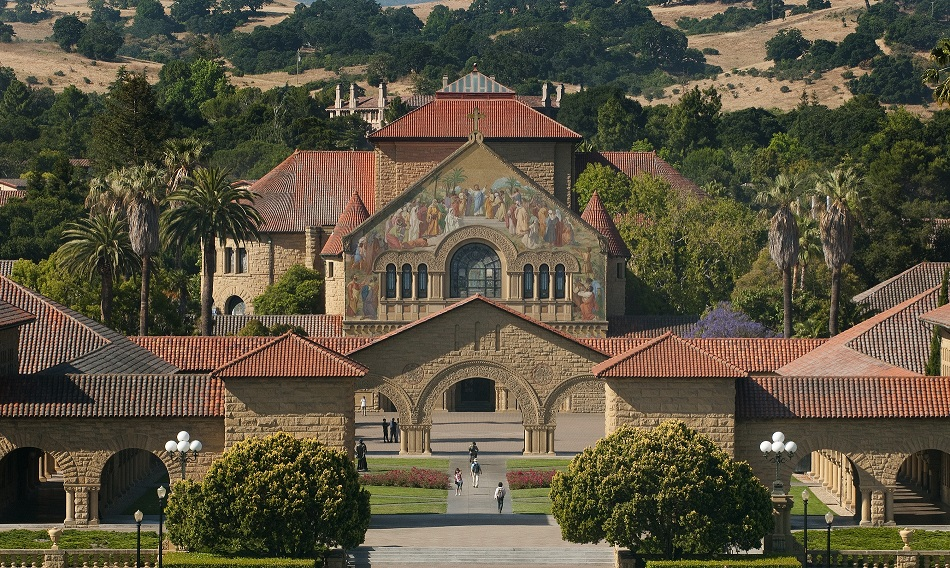
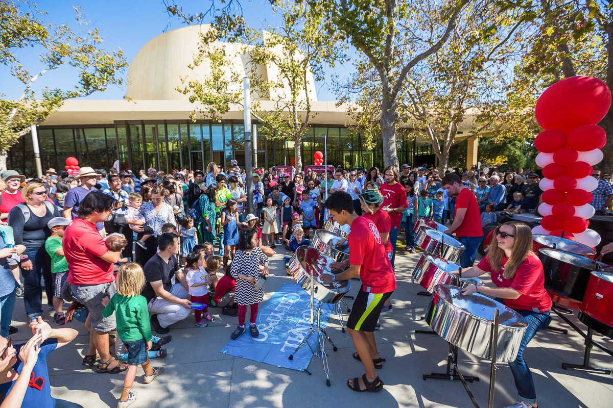

University Overview
Stanford University, founded in 1885, is one of the world’s leading research universities. Located in Stanford, California, it is known for its innovation, academic rigor, and entrepreneurial spirit. The university offers a wide variety of programs for undergraduate, graduate, and professional students in a wide range of disciplines.
Stanford’s mission is to promote the development of creative leaders who are committed to shaping a better future for humanity through education, research, and innovation.
Academic Programs
Undergraduate Programs
Stanford College offers an innovative liberal arts education, allowing students to explore interdisciplinary fields and engage in research from day one.
Graduate Programs
Stanford University offers graduate programs in a broad range of disciplines such as law, business, medicine, engineering, and humanities. The graduate schools include:
- Stanford Law School
- Stanford Graduate School of Business
- Stanford School of Medicine
- Stanford School of Engineering
- Stanford Graduate School of Education
Online Learning
Stanford also offers online programs through Stanford Online, offering high-quality learning opportunities in subjects such as artificial intelligence, data science, and business management.
Admissions Information
Undergraduate Admissions
Stanford is renowned for its competitive admissions process. Applicants are evaluated based on academic performance, extracurricular achievements, essays, and interviews.
The application deadlines are typically early action (November 1) and regular decision (January 2). Stanford accepts SAT/ACT scores and follows a holistic admissions process.
Graduate Admissions
Each of Stanford's graduate schools has specific admission requirements, including academic transcripts, standardized test scores, letters of recommendation, and a personal statement.
Campus Life
Stanford University offers a dynamic and diverse campus life with over 600 student organizations. Students have the opportunity to participate in cultural, academic, social, and recreational activities.
Clubs and Societies
Stanford students can engage in various clubs and societies such as Stanford Pre-Business Society, Stanford Political Union, and more.
Sports and Recreation
Stanford boasts world-class sports facilities and offers both varsity and intramural sports, including football, basketball, and tennis.
Research and Innovation
Stanford is at the cutting edge of research, with groundbreaking discoveries being made in fields ranging from artificial intelligence to climate change. The university is home to a variety of interdisciplinary research centers, including the Stanford Institute for Human-Centered AI and the Stanford Woods Institute for the Environment.
Stanford is also a hub of innovation, with initiatives such as the Stanford Technology Ventures Program helping students launch startups that make a global impact.
Contact Us

If you have any questions or need more information about Stanford University, feel free to get in touch with us:
Email: admissions@stanford.edu
Phone: +1 (650) 723-2300
Address: Stanford University, Stanford, CA 94305, USA